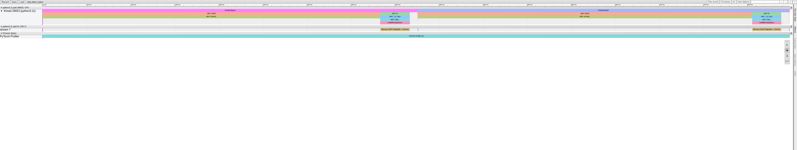

GPU MODE Lecture 1: How to profile CUDA kernels in PyTorch
load_inline, Triton, and NVIDIA Nsight Compute.
- GPU MODE Lecture Notes: My notes from the GPU MODE reading group lectures run by Andreas Kopf and Mark Saroufim.
- Lecture Information
- Profiling PyTorch Square with Autograd Profiler
- PyTorch Profiler
- Integrating CUDA Kernels in PyTorch
- Triton
- Optimization & Profiling with Nsight Compute
- Q&A
Lecture Information
- Speaker: Mark Saroufim
- Topic: Integrate and profile custom CUDA kernels in PyTorch programs.
- Resources:
- Lecture Slides: CUDA Mode: Lecture 1
- Textbook: Programming Massively Parallel Processors
- GitHub Repository: GPU MODE Lecture 1
- Discord Channel: GPU MODE
- YouTube Channel: GPU MODE
Profiling PyTorch Square with Autograd Profiler
- Timestamp: 9:57
- Profiling provides a way to visually understand “in a blackbox kind of way”
- Don’t need to know all the details of how a GPU or CUDA works to do something useful with it
Torch Autograd Profiler
- Provides insights into kernel execution time on CPU and GPU, number of calls, and dependencies.
- CUDA is asynchronous, requiring specialized profiling tools
- Can’t use the Python time module
- Would only measure the overhead to launch the CUDA kernel, not the time it takes to run the kernel
- Need to use
torch.cuda.Event- Start and end events
- Call
torch.cuda.synchronize()to ensure all operations finish before measuring performance.
- Can’t use the Python time module
| Class | Description | Documentation |
|---|---|---|
Event |
CUDA events are synchronization markers that can be used to monitor the device’s progress, to accurately measure timing, and to synchronize CUDA streams. | link |
Profiler |
A profiler that lets you inspect the cost of different operators inside your model - both on the CPU and GPU. | link |
- Problem: The first time you call CUDA in a PyTorch function, it’s going to initialize the CUDA context, distorting performance measurements
- Solution: Run the target function a few times to initialize the CUDA context before taking performance measurements.
Profile Squaring a PyTorch Tensor
- Profiling squaring a PyTorch tensor using the Python multiplication operation, the
torch.squaremethod, and the Python power operation.
Analyzing torch.square() vs. manual multiplication and Python’s power function
# Import PyTorch
import torchdef time_pytorch_function(func, input):
"""
Measure the execution time of a PyTorch function.
Args:
func (callable): The PyTorch function to be timed.
input: The input to the function.
Returns:
float: The execution time in milliseconds.
"""
# Since CUDA is asynchronous, we can't use Python's time module to measure time.
# Instead, we use PyTorch's CUDA events to measure the time.
start = torch.cuda.Event(enable_timing=True) # Create a start event
end = torch.cuda.Event(enable_timing=True) # Create an end event
# Perform a warmup to ensure the GPU is ready
for _ in range(5):
func(input) # Run the function 5 times to warm up the GPU
# Start the timer
start.record()
func(input) # Run the function to be timed
end.record() # Stop the timer
torch.cuda.synchronize() # Wait for the kernel to finish
return start.elapsed_time(end) # Return the elapsed time in milliseconds# Define a large sample tensor
b = torch.randn(10000, 10000).cuda()# Define function to square tensor using manual multiplication operation
def square_2(a):
"""
Square the input using multiplication.
Args:
a: The input value to be squared.
Returns:
The squared value of the input.
"""
return a * a # Return the square of the input using multiplication
# Define function to square tensor using Python's power function
def square_3(a):
"""
Square the input using exponentiation.
Args:
a: The input value to be squared.
Returns:
The squared value of the input.
"""
return a ** 2 # Return the square of the input using exponentiationprint("=============")
print("Profiling torch.square")
print("=============")
# Profile each function using the PyTorch profiler to measure performance
# and identify potential bottlenecks
with torch.autograd.profiler.profile(use_cuda=True) as prof:
"""
Create a PyTorch profiler context manager to profile the torch.square function.
Args:
use_cuda (bool): If True, uses CUDA for profiling (if available).
"""
# Profile torch.square function
torch.square(b)
# Print the profiling results, sorted by CUDA time and limited to the top 10 rows
print(prof.key_averages().table(sort_by="cuda_time_total", row_limit=10))=============
Profiling torch.square
=============
STAGE:2024-04-24 18:37:25 1254869:1254869 ActivityProfilerController.cpp:314] Completed Stage: Warm Up
STAGE:2024-04-24 18:37:25 1254869:1254869 ActivityProfilerController.cpp:320] Completed Stage: Collection
STAGE:2024-04-24 18:37:25 1254869:1254869 ActivityProfilerController.cpp:324] Completed Stage: Post Processing| Name | Self CPU % | Self CPU | CPU total % | CPU total | CPU time avg | Self CUDA | Self CUDA % | CUDA total | CUDA time avg | # of Calls |
|---|---|---|---|---|---|---|---|---|---|---|
| aten::square | 1.63% | 15.000us | 9.22% | 85.000us | 85.000us | 15.000us | 1.56% | 962.000us | 962.000us | 1 |
| aten::pow | 5.53% | 51.000us | 7.38% | 68.000us | 68.000us | 941.000us | 97.82% | 947.000us | 947.000us | 1 |
| aten::result_type | 0.11% | 1.000us | 0.11% | 1.000us | 1.000us | 4.000us | 0.42% | 4.000us | 4.000us | 1 |
| aten::to | 0.00% | 0.000us | 0.00% | 0.000us | 0.000us | 2.000us | 0.21% | 2.000us | 2.000us | 1 |
| cudaEventRecord | 1.30% | 12.000us | 1.30% | 12.000us | 1.500us | 0.000us | 0.00% | 0.000us | 0.000us | 8 |
| cudaLaunchKernel | 1.41% | 13.000us | 1.41% | 13.000us | 13.000us | 0.000us | 0.00% | 0.000us | 0.000us | 1 |
| cudaDeviceSynchronize | 90.02% | 830.000us | 90.02% | 830.000us | 830.000us | 0.000us | 0.00% | 0.000us | 0.000us | 1 |
| — | — | — | — | — | — | — | — | — | — | — |
| Self CPU time total: Self CUDA time total: |
922.000us 962.000us |
- The table shows the underlying C++ functions executed when calling the
torch.square()function in Python - The
torch.square()function executes theaten::squareC++ function- The
aten::squarecalls theaten::powfunction with a value of 2 - Source Code: aten::square
- The
print("=============")
print("Profiling a * a")
print("=============")
# Use PyTorch's autograd profiler to profile the execution of the square_2 function
# with CUDA enabled
with torch.autograd.profiler.profile(use_cuda=True) as prof:
# Execute the square_2 function and profile its execution
square_2(b)
# Print the profiling results, sorted by CUDA time and limited to the top 10 rows
print(prof.key_averages().table(sort_by="cuda_time_total", row_limit=10))=============
Profiling a * a
=============
STAGE:2024-04-24 18:37:25 1254869:1254869 ActivityProfilerController.cpp:314] Completed Stage: Warm Up
STAGE:2024-04-24 18:37:25 1254869:1254869 ActivityProfilerController.cpp:320] Completed Stage: Collection
STAGE:2024-04-24 18:37:25 1254869:1254869 ActivityProfilerController.cpp:324] Completed Stage: Post Processing| Name | Self CPU % | Self CPU | CPU total % | CPU total | CPU time avg | Self CUDA | Self CUDA % | CUDA total | CUDA time avg | # of Calls |
|---|---|---|---|---|---|---|---|---|---|---|
| aten::mul | 5.26% | 40.000us | 9.99% | 76.000us | 76.000us | 851.000us | 100.00% | 851.000us | 851.000us | 1 |
| cudaEventRecord | 1.71% | 13.000us | 1.71% | 13.000us | 6.500us | 0.000us | 0.00% | 0.000us | 0.000us | 2 |
| cudaLaunchKernel | 4.73% | 36.000us | 4.73% | 36.000us | 36.000us | 0.000us | 0.00% | 0.000us | 0.000us | 1 |
| cudaDeviceSynchronize | 88.30% | 672.000us | 88.30% | 672.000us | 672.000us | 0.000us | 0.00% | 0.000us | 0.000us | 1 |
| — | — | — | — | — | — | — | — | — | — | — |
| Self CPU time total: Self CUDA time total: |
761.000us 851.000us |
- The manual multiplication operation executes the
aten::mulC++ function
print("=============")
print("Profiling a ** 2")
print("=============")
# Use PyTorch's autograd profiler to profile the execution of the square_3 function
# with CUDA enabled
with torch.autograd.profiler.profile(use_cuda=True) as prof:
# Execute the square_3 function and profile its execution
square_3(b)
# Print the profiling results, sorted by CUDA time and limited to the top 10 rows
print(prof.key_averages().table(sort_by="cuda_time_total", row_limit=10))=============
Profiling a ** 2
=============
STAGE:2024-04-24 18:37:25 1254869:1254869 ActivityProfilerController.cpp:314] Completed Stage: Warm Up
STAGE:2024-04-24 18:37:25 1254869:1254869 ActivityProfilerController.cpp:320] Completed Stage: Collection
STAGE:2024-04-24 18:37:25 1254869:1254869 ActivityProfilerController.cpp:324] Completed Stage: Post Processing| Name | Self CPU % | Self CPU | CPU total % | CPU total | CPU time avg | Self CUDA | Self CUDA % | CUDA total | CUDA time avg | # of Calls |
|---|---|---|---|---|---|---|---|---|---|---|
| aten::pow | 6.34% | 47.000us | 8.64% | 64.000us | 64.000us | 855.000us | 99.77% | 857.000us | 857.000us | 1 |
| aten::result_type | 0.13% | 1.000us | 0.13% | 1.000us | 1.000us | 1.000us | 0.12% | 1.000us | 1.000us | 1 |
| aten::to | 0.00% | 0.000us | 0.00% | 0.000us | 0.000us | 1.000us | 0.12% | 1.000us | 1.000us | 1 |
| cudaEventRecord | 1.89% | 14.000us | 1.89% | 14.000us | 2.333us | 0.000us | 0.00% | 0.000us | 0.000us | 6 |
| cudaLaunchKernel | 1.75% | 13.000us | 1.75% | 13.000us | 13.000us | 0.000us | 0.00% | 0.000us | 0.000us | 1 |
| cudaDeviceSynchronize | 89.88% | 666.000us | 89.88% | 666.000us | 666.000us | 0.000us | 0.00% | 0.000us | 0.000us | 1 |
| — | — | — | — | — | — | — | — | — | — | — |
| Self CPU time total: Self CUDA time total: |
741.000us 857.000us |
- The the power function executes the same
aten::powC++ function called byaten::square
PyTorch Profiler
- Timestamp: 14:02
- PyTorch Profiler:
- Documentation: (link)
- Visual profiler generating Chrome traces for detailed analysis.
- Creates a JSON file, which you drag and drop into the Chrome browser at the following link:
- Provides information on memory copies, kernel launches, and flow events.
- Does not provide information on the kernel performance or how to improve it.
Profiling the torch.square() function
- Send tensor to GPU
- Compute the square of the tensor
import torch
from torch.profiler import profile, ProfilerActivityDefault usage
## Default way to use profiler
with profile(activities=[ProfilerActivity.CPU, ProfilerActivity.CUDA]) as prof:
for _ in range(10):
a = torch.square(torch.randn(10000, 10000).cuda())
prof.export_chrome_trace("default_trace.json")STAGE:2024-04-25 14:18:13 33490:33490 ActivityProfilerController.cpp:314] Completed Stage: Warm Up
STAGE:2024-04-25 14:18:18 33490:33490 ActivityProfilerController.cpp:320] Completed Stage: Collection
STAGE:2024-04-25 14:18:18 33490:33490 ActivityProfilerController.cpp:324] Completed Stage: Post ProcessingNon-default profiler schedule
## With warmup and skip
# Non-default profiler schedule allows user to turn profiler on and off
# on different iterations of the training loop;
# trace_handler is called every time a new trace becomes available
def trace_handler(prof):
print(prof.key_averages().table(
sort_by="self_cuda_time_total", row_limit=-1))
prof.export_chrome_trace("non_default_trace_" + str(prof.step_num) + ".json")
with torch.profiler.profile(
activities=[
torch.profiler.ProfilerActivity.CPU,
torch.profiler.ProfilerActivity.CUDA,
],
# In this example with wait=1, warmup=1, active=2, repeat=1,
# profiler will skip the first step/iteration,
# start warming up on the second, record
# the third and the forth iterations,
# after which the trace will become available
# and on_trace_ready (when set) is called;
# the cycle repeats starting with the next step
schedule=torch.profiler.schedule(
wait=1,
warmup=1,
active=2,
repeat=1),
on_trace_ready=trace_handler
# on_trace_ready=torch.profiler.tensorboard_trace_handler('./log')
# used when outputting for tensorboard
) as p:
for iter in range(10):
torch.square(torch.randn(10000, 10000).cuda())
# send a signal to the profiler that the next iteration has started
p.step()STAGE:2024-04-25 14:18:19 33490:33490 ActivityProfilerController.cpp:314] Completed Stage: Warm Up
STAGE:2024-04-25 14:18:19 33490:33490 ActivityProfilerController.cpp:320] Completed Stage: Collection
STAGE:2024-04-25 14:18:19 33490:33490 ActivityProfilerController.cpp:324] Completed Stage: Post Processing| Name | Self CPU % | Self CPU | CPU total % | CPU total | CPU time avg | Self CUDA | Self CUDA % | CUDA total | CUDA time avg | # of Calls |
|---|---|---|---|---|---|---|---|---|---|---|
| aten::copy_ | 0.00% | 40.000us | 7.82% | 66.271ms | 33.136ms | 66.023ms | 97.48% | 66.023ms | 33.011ms | 2 |
| Memcpy HtoD (Pageable -> Device) | 0.00% | 0.000us | 0.00% | 0.000us | 0.000us | 66.023ms | 97.48% | 66.023ms | 33.011ms | 2 |
| aten::pow | 0.01% | 77.000us | 0.01% | 120.000us | 60.000us | 1.704ms | 2.52% | 1.704ms | 852.000us | 2 |
| void at::native::vectorized_elementwise_kernel<4, at… | 0.00% | 0.000us | 0.00% | 0.000us | 0.000us | 1.704ms | 2.52% | 1.704ms | 852.000us | 2 |
| ProfilerStep* | 2.12% | 17.998ms | 99.90% | 846.892ms | 423.446ms | 0.000us | 0.00% | 67.727ms | 33.864ms | 2 |
| aten::randn | 0.00% | 25.000us | 89.94% | 762.421ms | 381.211ms | 0.000us | 0.00% | 0.000us | 0.000us | 2 |
| aten::empty | 0.00% | 37.000us | 0.00% | 37.000us | 18.500us | 0.000us | 0.00% | 0.000us | 0.000us | 2 |
| aten::normal_ | 89.93% | 762.359ms | 89.93% | 762.359ms | 381.180ms | 0.000us | 0.00% | 0.000us | 0.000us | 2 |
| aten::to | 0.00% | 25.000us | 7.83% | 66.347ms | 16.587ms | 0.000us | 0.00% | 66.023ms | 16.506ms | 4 |
| aten::_to_copy | 0.00% | 23.000us | 7.82% | 66.322ms | 33.161ms | 0.000us | 0.00% | 66.023ms | 33.011ms | 2 |
| aten::empty_strided | 0.00% | 28.000us | 0.00% | 28.000us | 14.000us | 0.000us | 0.00% | 0.000us | 0.000us | 2 |
| cudaMemcpyAsync | 7.81% | 66.193ms | 7.81% | 66.193ms | 33.096ms | 0.000us | 0.00% | 0.000us | 0.000us | 2 |
| cudaStreamSynchronize | 0.00% | 38.000us | 0.00% | 38.000us | 19.000us | 0.000us | 0.00% | 0.000us | 0.000us | 2 |
| aten::square | 0.00% | 6.000us | 0.01% | 126.000us | 63.000us | 0.000us | 0.00% | 1.704ms | 852.000us | 2 |
| aten::result_type | 0.00% | 2.000us | 0.00% | 2.000us | 1.000us | 0.000us | 0.00% | 0.000us | 0.000us | 2 |
| cudaLaunchKernel | 0.00% | 41.000us | 0.00% | 41.000us | 20.500us | 0.000us | 0.00% | 0.000us | 0.000us | 2 |
| cudaDeviceSynchronize | 0.10% | 841.000us | 0.10% | 841.000us | 841.000us | 0.000us | 0.00% | 0.000us | 0.000us | 1 |
| ——————————————- | ———— | ———— | ———— | ———— | ———— | ———— | ———— | ———— | ———— | ———— |
| Self CPU time total: 847.733ms Self CUDA time total: 67.727ms |
Memcpy HtoD (Pageable -> Device)Host to device copy
Pageable memory is on host but can be copied freely in and out of RAM
Equivalent to the
.cuda()call for sending a tensor to the GPU
aten::square is a call to aten::pow
A CUDA kernel gets launched called
native::vectorized_elementwise_kernel<4,..>- 4 is the number of blocks
- Source Code: elementwise CUDA kernel
This approach does not necessarily give us an idea of kernel performance of how we could improve it.

Integrating CUDA Kernels in PyTorch
- Timestamp: 17:48
- CUDA is typically written using C/C++
- PyBind: Create Python bindings for C++ code.
- Documentation: (link)
- torch.utils.cpp_extension.load_inline :
- Documentation: (link)
- Pass C++ source code, CUDA C/C++ code, and specify the functions to expose in Python
- Automatically generates C++ source files with required pybind Python bindings
- Automatically generates CUDA source files with required headers
- Automatically generates
build.ninjascript for compiling the C++ code - Automatically builds the extension
Hello World Example
from pathlib import Path
# Import the pandas package
import pandas as pd
# Do not truncate the contents of cells and display all rows and columns
pd.set_option('max_colwidth', None, 'display.max_rows', None, 'display.max_columns', None)
import torch
from torch.utils.cpp_extension import load_inlinecpp_source = """
std::string hello_world() {
return "Hello World!";
}
"""build_dir = Path('./load_inline_hello_world_cuda')
build_dir.mkdir(exist_ok=True)# Load a custom C++ module directly from inline sources
module = load_inline(
name='module', # Name of the module to be created
cpp_sources=[cpp_source], # List of C++ source code strings
functions=['hello_world'], # List of function names to be bound to Python
verbose=True, # Enable verbose output to help with debugging
build_directory=str(build_dir) # Directory to store the build artifacts
)Emitting ninja build file load_inline_hello_world_cuda/build.ninja...
Building extension module module...
Allowing ninja to set a default number of workers... (overridable by setting the environment variable MAX_JOBS=N)
[1/2] c++ -MMD -MF main.o.d -DTORCH_EXTENSION_NAME=module -DTORCH_API_INCLUDE_EXTENSION_H -DPYBIND11_COMPILER_TYPE=\"_gcc\" -DPYBIND11_STDLIB=\"_libstdcpp\" -DPYBIND11_BUILD_ABI=\"_cxxabi1011\" -isystem /home/innom-dt/mambaforge/envs/pytorch-env/lib/python3.11/site-packages/torch/include -isystem /home/innom-dt/mambaforge/envs/pytorch-env/lib/python3.11/site-packages/torch/include/torch/csrc/api/include -isystem /home/innom-dt/mambaforge/envs/pytorch-env/lib/python3.11/site-packages/torch/include/TH -isystem /home/innom-dt/mambaforge/envs/pytorch-env/lib/python3.11/site-packages/torch/include/THC -isystem /home/innom-dt/mambaforge/envs/pytorch-env/include/python3.11 -D_GLIBCXX_USE_CXX11_ABI=0 -fPIC -std=c++17 -c /mnt/980_1TB_1/Notes/CUDA_MODE/Lecture_1/load_inline_hello_world_cuda/main.cpp -o main.o
[2/2] c++ main.o -shared -L/home/innom-dt/mambaforge/envs/pytorch-env/lib/python3.11/site-packages/torch/lib -lc10 -ltorch_cpu -ltorch -ltorch_python -o module.so
Loading extension module module...print(module.hello_world())Hello World!# Print the path to the extension module
print(f"Module Path: {module.__file__}")Module Path: /mnt/980_1TB_1/Notes/CUDA_MODE/Lecture_1/load_inline_hello_world_cuda/module.so# Print the content of the module folder as a Pandas DataFrame
pd.DataFrame([path.name for path in Path(module.__file__).parent.iterdir()])| 0 | |
|---|---|
| 0 | .ninja_deps |
| 1 | .ninja_log |
| 2 | build.ninja |
| 3 | main.cpp |
| 4 | main.o |
| 5 | module.so |
ninja_required_version = 1.3
cxx = c++
cflags = -DTORCH_EXTENSION_NAME=module -DTORCH_API_INCLUDE_EXTENSION_H -DPYBIND11_COMPILER_TYPE=\"_gcc\" -DPYBIND11_STDLIB=\"_libstdcpp\" -DPYBIND11_BUILD_ABI=\"_cxxabi1011\" -isystem /home/innom-dt/mambaforge/envs/pytorch-env/lib/python3.11/site-packages/torch/include -isystem /home/innom-dt/mambaforge/envs/pytorch-env/lib/python3.11/site-packages/torch/include/torch/csrc/api/include -isystem /home/innom-dt/mambaforge/envs/pytorch-env/lib/python3.11/site-packages/torch/include/TH -isystem /home/innom-dt/mambaforge/envs/pytorch-env/lib/python3.11/site-packages/torch/include/THC -isystem /home/innom-dt/mambaforge/envs/pytorch-env/include/python3.11 -D_GLIBCXX_USE_CXX11_ABI=0 -fPIC -std=c++17
post_cflags =
cuda_dlink_post_cflags =
ldflags = -shared -L/home/innom-dt/mambaforge/envs/pytorch-env/lib/python3.11/site-packages/torch/lib -lc10 -ltorch_cpu -ltorch -ltorch_python
rule compile
command = $cxx -MMD -MF $out.d $cflags -c $in -o $out $post_cflags
depfile = $out.d
deps = gcc
rule link
command = $cxx $in $ldflags -o $out
build main.o: compile /mnt/980_1TB_1/Notes/CUDA_MODE/Lecture_1/load_inline_hello_world_cuda/main.cpp
build module.so: link main.o
default module.so#include <torch/extension.h>
std::string hello_world() {
return "Hello World!";
}
PYBIND11_MODULE(TORCH_EXTENSION_NAME, m) {
m.def("hello_world", torch::wrap_pybind_function(hello_world), "hello_world");
}Custom CUDA kernel for Square Operation
- CUDA Kernel
- Wrapper function to prepare PyTorch tensor as input for CUDA kernel
from pathlib import Path
# Import the pandas package
import pandas as pd
# Do not truncate the contents of cells and display all rows and columns
pd.set_option('max_colwidth', None, 'display.max_rows', None, 'display.max_columns', None)
import torch
from torch.utils.cpp_extension import load_inline# Define the CUDA kernel and C++ wrapper
cuda_source = '''
// Define a CUDA kernel function to square each element of a matrix.
// This kernel will be executed by multiple threads in a parallel manner on the GPU.
//
// @param matrix The input matrix (flattened as a 1D array).
// @param result The output matrix (flattened as a 1D array) where the squared values will be stored.
// @param width The width of the matrix.
// @param height The height of the matrix.
__global__ void square_matrix_kernel(const float* matrix, float* result, int width, int height) {
// Calculate the row index of the matrix element to be processed by this thread
int row = blockIdx.y * blockDim.y + threadIdx.y;
// Calculate the column index of the matrix element to be processed by this thread
int col = blockIdx.x * blockDim.x + threadIdx.x;
// Ensure the thread corresponds to a valid matrix element
if (row < height && col < width) {
// Linear index of the element in the flattened array
int idx = row * width + col;
// Square the matrix element and store the result
result[idx] = matrix[idx] * matrix[idx];
}
}
// Function to square each element of a matrix using GPU acceleration.
// It utilizes the PyTorch library for matrix operations and CUDA for parallel computation.
//
// @param matrix A 2D tensor representing the matrix whose elements are to be squared.
// @return A 2D tensor representing the matrix with each element squared.
torch::Tensor square_matrix(torch::Tensor matrix) {
// Extract the dimensions of the input matrix
const auto height = matrix.size(0);
const auto width = matrix.size(1);
// Create an output tensor with the same dimensions and properties as the input matrix
auto result = torch::empty_like(matrix);
// Define the size of the CUDA blocks and grid
// Each block contains 16x16 threads, a common choice for many kernels
dim3 threads_per_block(16, 16);
// Calculate the number of blocks in each dimension
dim3 number_of_blocks((width + threads_per_block.x - 1) / threads_per_block.x,
(height + threads_per_block.y - 1) / threads_per_block.y);
// Launch the CUDA kernel
// Pass pointers to the device memory, dimensions, and configure the grid and blocks
square_matrix_kernel<<<number_of_blocks, threads_per_block>>>(
matrix.data_ptr<float>(), result.data_ptr<float>(), width, height);
// Return the result as a PyTorch tensor
return result;
}
'''
cpp_source = "torch::Tensor square_matrix(torch::Tensor matrix);"build_dir = Path('./load_inline_cuda')
build_dir.mkdir(exist_ok=True)# Load the defined C++/CUDA extension as a PyTorch extension.
# This enables using the `square_matrix` function as if it were a native PyTorch function.
square_matrix_extension = load_inline(
name='square_matrix_extension', # Unique name for the extension
cpp_sources=cpp_source, # C++ source code containing the CPU implementation
cuda_sources=cuda_source, # CUDA source code for GPU implementation
functions=['square_matrix'], # List of functions to expose to Python
with_cuda=True, # Enable CUDA support
extra_cuda_cflags=["-O2"], # Compiler flags for optimizing the CUDA code
build_directory=str(build_dir), # Directory to store the compiled extension
)
a = torch.tensor([[1., 2., 3.], [4., 5., 6.]], device='cuda')
print(square_matrix_extension.square_matrix(a))tensor([[ 1., 4., 9.],
[16., 25., 36.]], device='cuda:0')# Print the path to the extension module
print(f"Module Path: {square_matrix_extension.__file__}")Module Path: /mnt/980_1TB_1/Notes/CUDA_MODE/Lecture_1/load_inline_cuda/square_matrix_extension.so# Print the content of the module folder as a Pandas DataFrame
pd.DataFrame([path.name for path in Path(square_matrix_extension.__file__).parent.iterdir()])| 0 | |
|---|---|
| 0 | .ninja_deps |
| 1 | .ninja_log |
| 2 | build.ninja |
| 3 | cuda.cu |
| 4 | cuda.cuda.o |
| 5 | main.cpp |
| 6 | main.o |
| 7 | square_matrix_extension.so |
#include <torch/types.h>
#include <cuda.h>
#include <cuda_runtime.h>
// Define a CUDA kernel function to square each element of a matrix.
// This kernel will be executed by multiple threads in a parallel manner on the GPU.
//
// @param matrix The input matrix (flattened as a 1D array).
// @param result The output matrix (flattened as a 1D array) where the squared values will be stored.
// @param width The width of the matrix.
// @param height The height of the matrix.
__global__ void square_matrix_kernel(const float* matrix, float* result, int width, int height) {
// Calculate the row index of the matrix element to be processed by this thread
int row = blockIdx.y * blockDim.y + threadIdx.y;
// Calculate the column index of the matrix element to be processed by this thread
int col = blockIdx.x * blockDim.x + threadIdx.x;
// Ensure the thread corresponds to a valid matrix element
if (row < height && col < width) {
// Linear index of the element in the flattened array
int idx = row * width + col;
// Square the matrix element and store the result
result[idx] = matrix[idx] * matrix[idx];
}
}
// Function to square each element of a matrix using GPU acceleration.
// It utilizes the PyTorch library for matrix operations and CUDA for parallel computation.
//
// @param matrix A 2D tensor representing the matrix whose elements are to be squared.
// @return A 2D tensor representing the matrix with each element squared.
torch::Tensor square_matrix(torch::Tensor matrix) {
// Extract the dimensions of the input matrix
const auto height = matrix.size(0);
const auto width = matrix.size(1);
// Create an output tensor with the same dimensions and properties as the input matrix
auto result = torch::empty_like(matrix);
// Define the size of the CUDA blocks and grid
// Each block contains 16x16 threads, a common choice for many kernels
dim3 threads_per_block(16, 16);
// Calculate the number of blocks in each dimension
dim3 number_of_blocks((width + threads_per_block.x - 1) / threads_per_block.x,
(height + threads_per_block.y - 1) / threads_per_block.y);
// Launch the CUDA kernel
// Pass pointers to the device memory, dimensions, and configure the grid and blocks
square_matrix_kernel<<<number_of_blocks, threads_per_block>>>(
matrix.data_ptr<float>(), result.data_ptr<float>(), width, height);
// Return the result as a PyTorch tensor
return result;
}#include <torch/extension.h>
torch::Tensor square_matrix(torch::Tensor matrix);
PYBIND11_MODULE(TORCH_EXTENSION_NAME, m) {
m.def("square_matrix", torch::wrap_pybind_function(square_matrix), "square_matrix");
}Alternatives
- Numba
- Website: (link)
- Write CUDA kernels directly in Python.
- Easier syntax compared to C++, but may have performance limitations.
Triton
- Timestamp: 26:14
- Documentation: (link)
- Python-based domain-specific language (DSL) for GPU programming.
- Accessed through Python functions
- Block-based programming language
- Does not generate CUDA
- Generates a PTX kernel (CUDA assembly)
- Has a cache called
.triton- Stores all individual LLVM IRs (Intermediate Representations) including the PTX
- The most important optimization for machine learning code is often fusions
- Include more operations in a single kernel
- Start with simple kernels and gradually increase complexity.
- Leverage existing PyTorch kernels and Triton tutorials as learning resources.
- Focus on kernel fusion to improve performance by combining multiple operations.
- Consider using torch.compile to automatically generate Triton kernels from PyTorch code.
Code Example: Square operation using Triton
- Operates over rows instead of threads
- The block size had a significant impact on performance
Triton debugger
triton.jit(interpret=True)- Allows you to inspect code using Python breakpoints
- Almost everything is a
WrappedTensor- Inspect variables with
var_name.tensor
- Inspect variables with
- Environment variable:
TRITON_INTERPRET=1
- Can’t use print statements
- Store variables in global memory and read them
Code Example: Exploration of generated Square Kernel PTX
- Element-wise matrix square
- Triton is leveraging 8 registers at a time
- Store global: writing the variables back to global memory
- Can see what are the actual registers being used directly
- Recommendation:
- Use ChatGPT (or other) to annotate the generated PTX assembly code
Code Example: Auto-generate a triton kernel using torch.compile()
# Print the code generated by torch.compile to the console TORCH_LOGS="output_code" TORCH_LOGS="OUTPUT_CODE"torch.compile(torch.square)- Generated triton kernel does not operate row-by-row
- Includes data type heuristics
- Includes compiler heuristics
Optimization & Profiling with Nsight Compute
- Timestamp: 39:16
- NVIDIA NSight Compute Profiler
- Download NVIDIA Nsight Compute
- NVIDIA Nsight Tools JupyterLab Extension
- Default Usage
ncu python train.py
- Does not work on most cloud providers
Logs Example:
- Shows L1 Cache throughput, L2 Cache throughput, among others
- Contains actionable hints:
OPT This kernel grid is too small to fill the available resources on this device, resulting in only 0.4 full waves across all SMs. Look at Launch Statistics for more details.- Gives percentages that provide a performance ceiling to target
- Tail effect and achieved occupancy
- often controlled by padding
- We can control padding
- often controlled by padding
- Long scoreboard stalls:
- coalesce reads and writes
- use shared memory
- controlled by triton
Visual Profiler
ncu --set full -o output $(which python) train.py- Can see the memory throughput, compute throughput, block size, etc.
- Can examine individual lines of code
Moving from PyTorch to Triton to CUDA
- Try triton first if PyTorch is not enough
- Use NCU profiler to see what performance improvements can be made over the triton attempt
- Consider moving to CUDA if the hints suggest tweaking something (e.g., long scoreboard stalls) that triton controls
| CUDA | Triton | |
|---|---|---|
| Memory Coalescing | Manual | Automatic |
| Shared Memory Management | Manual | Automatic |
| Scheduling (Withing SMs) | Manual | Automatic |
| Scheduling (Across SMs) | Manual | Manual |
Q&A
- Timestamp: 44:57
- Relationship between triton and
torch.compile- Compilers are quite dumb
torch.square- torch compile does not know what this operation is since it is not a primitive operation
- turns it into a
torch.muloperation - reads the
torch.muloperation and writes a string to disk for usingtriton.muland you run that
- turns it into a
- torch compile does not know what this operation is since it is not a primitive operation
- Compilers are quite dumb
- How often do you find the triton code generated with
torch.compilereadable enough to be a useful starting point?- Almost always
- Compilers can’t do things that are too clever
- The main thing to look for is fusing as many things as possible into as few kernels as possible
- The variable names are things like
temp1andtemp0- Add you own comments using LLM like ChatGPT
- Did you compare the performance of triton vs CUDA for square kernel?
- Did not
- Does CUDA also generate PTX code?
- Yes, but do not know how to look at it.
- When does
torch.compilebreak?- The design philosophy of torch compile is that you should not need to change your code
- Writing your code with torch compile in mind can result in SOTA performance
- SAM, Stable Diffusion, etc.
I’m Christian Mills, an Applied AI Consultant and Educator.
Whether I’m writing an in-depth tutorial or sharing detailed notes, my goal is the same: to bring clarity to complex topics and find practical, valuable insights.
If you need a strategic partner with my approach to thinking and problem-solving for your AI project, I’m here to help. Let’s talk about de-risking your roadmap and building a real-world solution.
Start the conversation with my Quick AI Project Assessment or learn more about my approach.